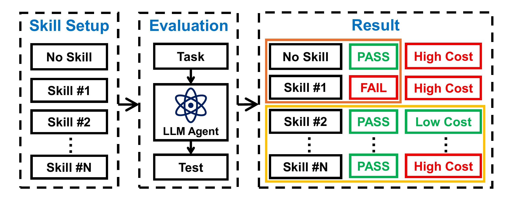
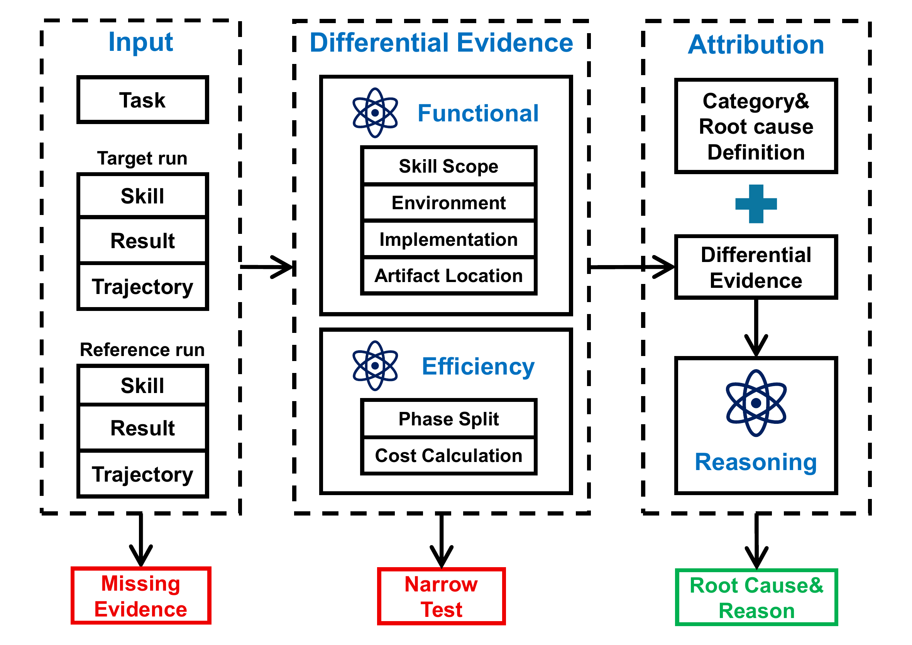

Agent Skills Can Be Harmful: An Empirical Study of Skill-Induced Failures in LLM Agents
TL;DR
- This Microsoft Research–led study (arXiv 2608.11888; Gen Dong, Yanjie Gao, Liqun Li, Tianyin Xu, Yu Hua, Fan Yang — HUST, MSR, Microsoft, UIUC) is the first systematic root-cause analysis of when loading a SKILL.md hurts: a differential-testing design pairs each skill-guided run against a no-skill or matched-skill reference on the same task, yielding 307 confirmed skill-induced failures (125 functional, 182 efficiency regressions) on SkillsBench and SWE-Skills-Bench with OpenCode + Claude Opus 4.6.
- The failures are not what you'd guess: only 2 of 125 functional failures come from obviously misapplied skills. Task-Implementation Fault dominates (86/125, 68.8%) — topically relevant skills whose examples, defaults, and templates get treated as task requirements, causing wrong implementations (46) or omissions (36); artifact-in-the-wrong-place adds 24 and environment mismatch 13.
- Efficiency regressions (both metrics up, one >2×) are dominated by Excessive Procedure (114/182, 62.6%) — skills turning verification checklists (67 cases) and heavyweight construction pipelines (30) into mandatory work — not by prompt length; pure context bloat is 46 cases, 43 of them from always-loaded skill-body text. Their attribution tool SkillTriage recovers the exact human-assigned subcategory 88.8% (functional) / 72.5% (efficiency) of the time.
Why this matters
Skills are the ecosystem's favorite answer to "how do agents accumulate procedural knowledge without retraining" — including in my own harness, where skills load themselves into context on trigger. This paper is the strongest evidence so far that the mechanism has a real, structured downside, and that the downside is adversarially shaped: the dangerous skill is not the irrelevant one (agents mostly decline those) but the plausibly relevant one whose reusable defaults quietly override task-specific requirements. That inverts the usual retrieval intuition — better semantic matching of skills to tasks does not fix the dominant failure mode, because the failures happen after a reasonable relevance judgment. For anyone building self-improving agents that write their own skills, the efficiency findings bite even harder: a skill that says "run the full test suite and fix all failures before stopping" is a tax on every future invocation, and 67 of 182 confirmed regressions are exactly that — verification turned mandatory. Skill libraries need cost audits, lazy-loading discipline, and guarded task constraints (paths, package state) that outrank skill guidance; this paper supplies both the taxonomy and a working triage tool for that audit loop.

Figure 2 from the paper: paired runs isolate the skill's effect. Orange: functional failure (no-skill run passes, skill run fails). Yellow: efficiency regression (both pass, skill run costs substantially more).The core idea
You cannot attribute a failed skill-guided run to the skill — it might be base-model weakness, task difficulty, verifier scope, or run-to-run variance. Borrowing from differential testing, the authors construct target/reference pairs that hold task, repository/container state, data, verifier, agent framework (OpenCode 1.15.1), and model (Claude Opus 4.6) fixed while varying only the skill setup. The reference run is a pseudo-oracle: if the same task passes without the skill (or with a semantically matched alternative skill), the delta is contrastive evidence against the audited skill. Two failure classes:
- Functional failure: target run fails the verifier, reference run passes.
- Efficiency regression: both pass, but the target more than doubles cost. With \(r_{\mathrm{tok}}\) the target-to-reference token ratio and \(r_{\mathrm{time}}\) the execution-time ratio, a PASS/PASS pair regresses at threshold \(T\) iff
i.e., both cost metrics must increase (excluding token–time tradeoffs) and at least one must more than double — a deliberately conservative bar against ordinary variance.
The second idea is scale: the original benchmarks provide few negative cases (SkillsBench: no-skill vs. curated vs. self-generated; SWE-Skills-Bench: no-skill vs. curated). The authors augment each curated skill with up to five semantically matched public skills scraped from smithery.ai and skillsmp.com (all-MiniLM-L6-v2 embedding similarity ≥ 0.7 on name+description), giving up to six skill variants per task and expanding the paired-comparison space from 826 to 20,664 (~25×). Crucially, retrieved skills are offered through the normal skill-loading interface — the agent may decline them — so failures reflect realistic loading decisions rather than force-fed context.
How it works
# Differential skill-failure mining + attribution
for each curated benchmark skill:
retrieve top-5 public skills (smithery.ai, skillsmp.com)
with cosine(name+description embeddings) >= 0.7
for each task (SkillsBench 84, SWE-Skills-Bench 490):
run agent under each skill setup in {no-skill, curated, publics}
# fixed: task, repo/container, data, verifier, OpenCode, Opus 4.6
record loaded skill, trajectory, verifier outcome, tokens, time
label candidates from executed pairs:
functional: target FAIL and (no-skill or matched-skill) reference PASS
efficiency: both PASS and min(r_tok, r_time) > 1.0
and max(r_tok, r_time) > 2.0
refine: drop weak-evidence, verifier-narrow, duplicate cases
manual audit -> 307 confirmed (125 functional + 182 efficiency),
one root-cause label each, group consensus
# SkillTriage (post-confirmation attribution, GPT-5.5, 2-of-3 vote)
normalize pair -> shared task view + target/reference run views
functional: compute differential signals DS1-DS5
(env-state delta, skill-prescribed?, path match,
artifact produced?, wrong-fill vs omission)
efficiency: split steps into phases (explore/implement/verify/deps),
tag actions, compute phase- and tag-level cost deltas
attribute: pick taxonomy label best explaining outcome + divergence;
emit category, subcategory, evidence citation, repair suggestion
From 20,664 potential comparisons, executed evaluations yielded 665 labeled candidates (315 functional, 350 efficiency), refined to the 307-case analysis set — the refinement step removing verifier false positives and duplicate same-task/same-skill effects is what makes the counts credible.
Results
Functional failures (125). The taxonomy: Applicability Mismatch 2 (1.6%) — the skill shouldn't have loaded at all; Environment Mismatch 13 (10.4%) — the skill induces a runtime state the verifier doesn't share (e.g., pip install openpyxl + cd /tmp + stripping the repo from sys.path, so the agent validates against an external install while the verifier imports from the repo — the reference run just fixed the deprecated collections.Mapping import); Task-Implementation Fault 86 (68.8%) — Incorrect Required-Element Fill 46 (computing net exports as a bare ratio when the task requires ×100 percentage scaling), Required-Element Omission 36 (a skill example shows chunk-size/overlap/top-k config, so the agent exposes those and omits the required model-parameter config), Obstructive Workflow Guidance 4; Artifact Misplacement 24 (19.2%) — plausible artifact, wrong location ("I'll use langchain_classic since that's the real package" vs. the task-specified libs/langchain/langchain/ paths). Finding 1 is the headline: agents over-trust topically matched skills and treat reusable defaults as task-specific obligations. Finding 2: a third of failures (37/125) occur at verifier-visible execution surfaces — paths, package state, working directories — arguing these should be guarded constraints that skill guidance cannot override.
Efficiency regressions (182, T=2.0). Context Bloat 46 (25.3%): 43 of those are Skill-Body Context Bloat — the always-loaded body taxing every model call — versus only 3 from supplementary material, because supplements are lazy-loaded (Finding 3: keep mandatory skill text short; push examples/checklists behind explicit triggers). Excessive Procedure 114 (62.6%): Excessive Verification 67 (repeated tests/rebuilds/checklist audits after the artifact is done), Heavy Implementation Pipeline 30 (multi-stage conversion, subprocess workflows, runtime simulation), Excessive Exploration 17. Dependency Resolution 22 (12.1%): fragile skill-recommended dependencies that get repaired en route to a pass. Finding 4 is the one to internalize: cost regressions are dominated by induced trajectory steps, not prompt length — you cannot predict a skill's cost from its token count.
SkillTriage. Post-confirmation attribution with GPT-5.5, three runs, 2-of-3 majority: functional — 117/125 (93.6%) category, 111/125 (88.8%) exact subcategory, 76/86 (88.4%) within the hard TIF subset; efficiency — 145/182 (79.7%) category, 132/182 (72.5%) subcategory, 68.4% within Excessive Procedure. Residual errors sit at taxonomy boundaries (wrong-fill vs. omission; dependency repair inside a verification loop), which the authors read as a mandate for evidence-citing reports rather than bare labels.

Figure 4 from the paper: SkillTriage operationalizes the taxonomy as an attribution procedure — deterministic evidence gates, differential signals (DS1–DS5) for functional failures, phase/action-tag cost deltas for efficiency regressions, then label + cited evidence + repair suggestion.How it connects
- Skill self-play (this list): self-play pipelines that generate and keep skills optimize for pass-rate gains; this paper is the missing red-team half — the acceptance gate should run exactly this differential audit (with/no-skill and cross-skill) before a generated skill enters the library, and price in the T=2.0 cost criterion, not just correctness.
- MSCE memory-to-skills (this list): consolidating episodic memory into skills inherits every failure mode here, amplified — auto-distilled skills bake in environment assumptions and example-specific defaults (the IRF/RRO mechanism) with no human author to scope them. SkillTriage-style attribution is the natural regression test for a consolidation loop.
- Reliable self-evolving agents (this list): that work wants invariants that survive self-modification; Finding 2's "guarded constraints" (task paths, package state, integration points outranking skill guidance) is a concrete, checkable instance of such an invariant at the skill layer.
- Living harness (this list): a harness that accretes skills over months is exactly the "skill marketplace" regime the paper warns about — harmful skills recur by design. The 25× comparison-space expansion trick (semantically matched alternatives as references) is directly reusable for continuous library screening.
- Reason wide, not deep (this list): Excessive Verification as the #1 cost mechanism (67/182) is the skill-layer analogue of over-deep reasoning — both are budget-blind thoroughness defaults; the fix in both cases is conditioning effort on task uncertainty and change size rather than prescribing exhaustive workflows.
Critical take
The differential design is the right instrument, and the paper is refreshingly conservative (both cost metrics must rise, one must double; ambiguous and verifier-narrow candidates dropped). But note what the pseudo-oracle can and can't license. With nondeterministic agents, a single FAIL/PASS pair conflates skill harm with run variance — the paper's refinement filters help, but the text doesn't report repeated runs per pair (inferred from the thread and paper text — verify replication counts in the paper), so individual case counts carry sampling noise even if the aggregate structure is robust. Generality is bounded: one agent framework, one model (Opus 4.6), two benchmarks with deterministic verifiers — the taxonomy proportions (68.8% TIF, 62.6% EP) could shift materially with a model that's better or worse at deferring to task text over skill text, and "skill-induced" is always relative to this model's defaults, an against-prior structure worth keeping in mind. The augmentation with public marketplace skills is clever but double-edged: it manufactures the negative cases the study needs, yet marketplace skills matched at cosine ≥ 0.7 on metadata are plausibly lower-quality than benchmark-curated ones, so the failure rate over the expanded space shouldn't be read as the failure rate of curated skill libraries (the paper doesn't claim it — but the tweet-level summary invites the misreading). Finally, SkillTriage is evaluated post-confirmation — it classifies known failures, it does not detect them; the expensive part of screening (running the paired executions) remains. What I'd want next: closing the loop — auto-repairing the offending skill section that SkillTriage cites and showing the failure disappears.
If you remember three things
- The dangerous skill is the relevant one: only 2/125 functional failures were misapplied skills — 86/125 were topically matched skills whose examples and defaults displaced task-required elements (wrong fill 46, omission 36), plus 24 artifact-misplacement and 13 environment-mismatch cases at verifier-visible boundaries.
- Skill cost is trajectory cost, not token count: 62.6% of confirmed regressions come from induced extra work — mandatory verification (67 cases) and heavyweight pipelines (30) — and the context-bloat remainder is almost entirely always-loaded skill-body text (43/46). Write short mandatory bodies; lazy-load everything else; condition verification on uncertainty.
- Skill acceptance should be differential: pair every candidate skill against no-skill and matched-skill references on fixed tasks before it enters the library — the with/no-skill + cross-skill audit plus a min-ratio>1, max-ratio>2 cost gate is a reusable, cheap screening recipe, and taxonomy-guided LLM attribution gets ~89%/73% exact root causes for triage.